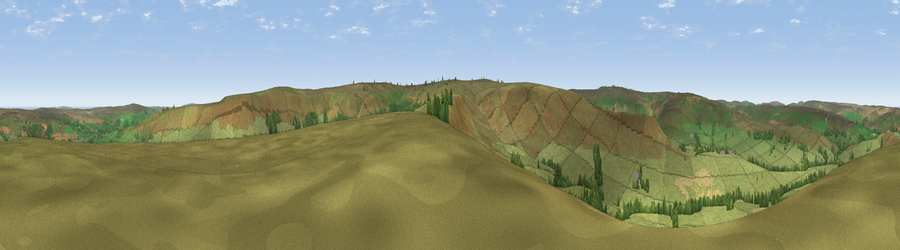

Viewpoint near Botton
#8584 in England · top 25% of its area beats it · near BottonThe view, rendered

A 360° render of this exact spot computed from the terrain model, tree cover and land cover — summer colours, afternoon light, calibrated against photographs of famous viewpoints. Real trees, hedges and buildings will differ in detail.
The panorama
Grey silhouette: terrain skyline in each direction (720 bearings, Earth curvature and refraction included). Dashed green: skyline with trees (+15 m) and buildings (+8 m) as obstacles. Blue strip: how far the ground is visible on each bearing.
Where the view opens
Wedge length = distance to the farthest visible ground on that bearing (vegetation-aware). Rings at 10, 25 and 50 km.
What fills the view
93% grassland · 5% woodland · 2% cropland
Angular shares of the visible panorama (visual magnitude), not map area. Landscape diversity 0.14 (0–1 Shannon).
Key numbers
More beautiful places nearby
The staircase of upgrades: each row has a higher view potential than everything closer. Driving times are estimates from straight-line distance, calibrated against real road routing — check an actual route before setting out.
| Place | Direction | Drive | Score |
|---|---|---|---|
| Viewpoint near Botton | E · 2 km | ~6 min | 69.7 |
| Viewpoint near Botton | ESE · 2 km | ~6 min | 72.1 |
| Peat Hill | SE · 6 km | ~12 min | 72.5 |
| Danby Beacon | NE · 7 km | ~14 min | 73.4 |
| Viewpoint near Ingleby Greenhow | WSW · 8 km | ~16 min | 75.6 |
| Viewpoint near Ingleby Greenhow | W · 8 km | ~16 min | 76.0 |
| Easby Moor | WNW · 10 km | ~20 min | 78.5 |
| Viewpoint near Charltons | NNW · 11 km | ~20 min | 80.6 |
54.43832, -0.94962 · source: screening · position refined by local search. Computed location — check access rights before visiting.